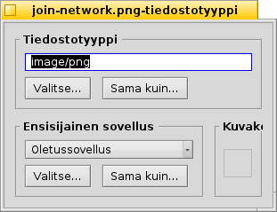
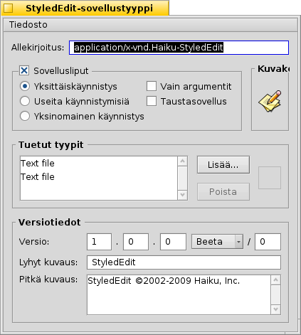

Suomi
Suomi Français
Français Deutsch
Deutsch Italiano
Italiano Русский
Русский Español
Español Svenska
Svenska 日本語
日本語 Українська
Українська 中文 ［中文］
中文 ［中文］ Português
Português Slovenčina
Slovenčina Magyar
Magyar Português (Brazil)
Português (Brazil) English
EnglishTiedostotyypit
Toisin kuin Windows-käyttöjärjestelmässä, Haiku ei tukeudu 3-kirjaimiseen tiedostotyyppien tiedostotarkentimiin (esimerkiksi .txt, .jpg, mp3). Tämä menetelmä on ainoastaan viimeinen varasuunnitelmavaihtoehto. Haiku käyttää MIME-tyyppejä aivan kuten on tapana internetissä.
 Tietyn tiedoston tiedostotyypin asettaminen
Tietyn tiedoston tiedostotyypin asettaminen
Voit vaihtaa tietyn tiedoston tyyppiä, sen kuvaketta ja siihen liitettyä sovellusta. Valitse tiedosto ja kutsu asiayhteysvalikosta hiiren oikealla painikkeella.

Tiedostotyyppi
Yllä on PNG-tiedosto, sen MIME-merkkijono image/png. Sanotaan, että varmasti tiedät, että se ei ole PNG-tiedosto, vaan GIF-tiedosto. Voit muuttaa sen joko kirjoittamalla oikean MIME-merkkijonon manuaalisesti tai yhdellä kahdesta painikkeesta teksti-ikkunan alla.
| näyttää tiedostotyyppien hierarkisen luettelon, johon navigoit image | GIF Image. | ||
| avaa tiedostonvalintaikkunan, jossa valitse minkä tahansa tiedoston, jolla on jo etsimäsi tiedostotyyppi. |
Ensisijainen sovellus
Tämä ponnahdusvalikko näyttää kaikkien niiden sovellusten luettelon, jotka voivat käsitellä tätä tiettyä tiedostotyyppiä. Siitä voit valita millä ohjelmalla avaat tämän tietyn tiedoston kaksoisnapsautuksen jälkeen. Voisit esimerkiksi vaihtaa HTML-tiedoton ensisijaista sovellusta selaimesta tekstieditoriksi, jolla työstät tiedostoa. Jokainen muu HTML-tiedosto avautuu yhä selaimessa, vain tämä tietty tiedosto avautuu tekstieditorissasi.
on se, joka on asetettu yleisesti tälle tiedostotyypille. Jos et löydä ohjelmaa, jonka haluat liittää tähän tiedostoon ponnahdusvalikosta, voit jälleen etsiä painikkeilla ja , jotka tekevät samaa kuin mitä kuvattiin yllä kohdassa "Tiedostotyyppi".
Kuvake
Jos ihmettelet, että miksi kuvakelähde oikeassa yläkulmassa on tyhjä: Kuvakkeet periytyvät normaalisti järjestelmäoletuksesta tuolle tiedostotyypille. Voit avata tiedoston Tiedostotyyppilisäosan, joka sisältää kuvakkeen ja raahata ja pudottaa sen tiedostosi kuvakelähteeseen. Tai kaksoisnapsautat kuvakelähdettä ja luot tai muokkaat oman kuvakkeesi. Lisätietoja kuvakkeista ja siitä kuinka luot oman, katso aihetta Kuvakemaatti.
Sovellusten erityisasetukset
Jos kutsut Tietostotyyppilisän suoritettavalle tiedostolle (tässä: StyledEdit), saat erilaisen valintaikkunan:
Ylimmäisen näet vakion MIME-merkkijonon sijasta uniikin sovellusallekirjoituksen. Sen avulla järjestelmä löytää ohjelman heti kun se on asennettu.
Alla on useita lippuja, jotka ohjaavat sovelluksen käyttäytymistä:
| Vain yksi sovelluksen ilmentymä voidaan suorittaa kerrallaan. Jos sinulla on kuitenkin kaksi kopiota sovelluksesta, ne voidaan suorittaa rinnatusten. | ||
| Monia sovelluksen ilmentymiä voidaan suorittaa samanaikaisesti. | ||
| Todella vain yksi ilmentymä sovelluksen allekirjoituksella saa suorittaa kerrallaan. | ||
| ilmoiittaa,, että sovellus ei vastaa viesteihin. | ||
| Sovellus ei ole näkyvissä Vaihtajaohjelmassa tai Työpöytäpalkin suoritettavien ohjelmien luettelossa. |
Sitten siellä on tuettujen tiedostotyyppien luettelo. Voit lisätä (tai poistaa) tiedostotyyppejä, jos ajattelet, että sovellus voi käsitellä niitä. Seurauksena sovellus ilmaantuu ensisijaisen sovelluksen valikkoon tai Seuraajan -aiheyhteysvalikkoon, kun napsautat hiiren oikealla painikkeella tuon tyyppistä tiedostoa.
Alimmaisen on versio- ja copyright-tiedot. Kuten sovellusallekirjoitus, ne täyttää sovelluksen kehittäjä niitä ei pitäisi muuttaa.
Yleiset tiedostotyypit-asetukset
Tiedostotyypit-asetukset ei käsittele yksittäisiä tiedostoja vaan yleisiä tiedostotyypin asetuksia. Voit vaihtaa oletuskuvaketta ja ensisijaista ohjelmaa tai lisätä, poista ja muuttaa koko tiedostotyypin attribuuttteja. Voit jopa luoda oman tiedostyypin tyhjästä.
Kaikki tiedostotyypit ja niiden asetukset tallennetaan kansioon /boot/home/config/settings/beos_mime/. Ennenkuin aloitat kokeilun, saatta olla järkevä tehdä varmuuskopio tuosta kansiosta...
Opi lisää Tiedostotyypit-asetuksista katsomalla työpajaa: Tiedostotyypit, Attribuutit, Indeksi ja Kyselyt.